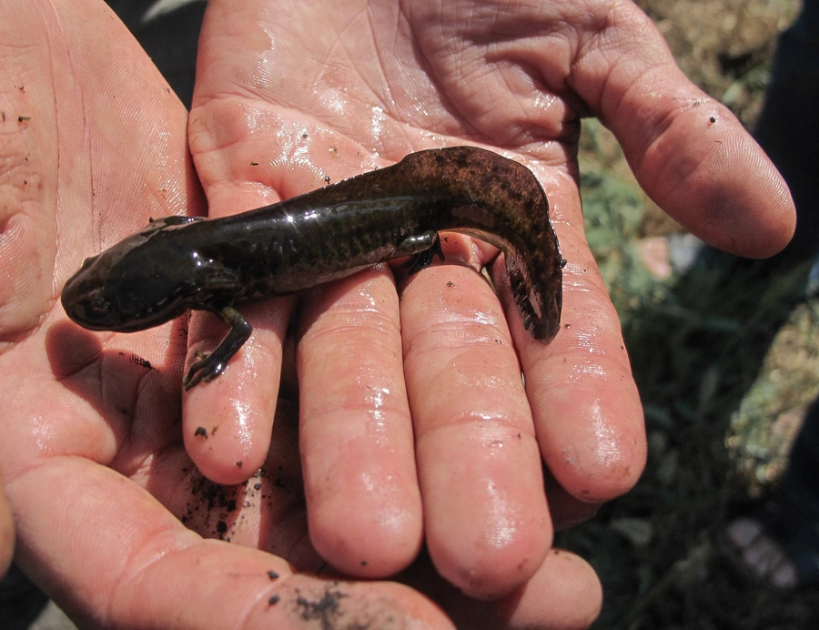

两栖动物 · 动物界
墨西哥钝口螈 Ambystoma mexicanum

终生保留幼体外鳃的“六角恐龙”，再生能力极强，仅分布于墨西哥城附近水域，已被列为极危物种。
- 分类
- 门脊索动物门纲两栖纲目有尾目科钝口螈科属钝口螈属
- 栖息环境
- 墨西哥城附近的运河水道、湿地与湖泊浅水区
- 地理分布
- 墨西哥霍奇米尔科湖及周边运河湿地，野外仅存极小种群
- 保护级别
- IUCN 极危（CR）；非中国原产，在中国无保护级别
物种志
墨西哥钝口螈体长 15–30 厘米，头部宽扁，两侧长着三对羽毛状外鳃，因外貌酷似长着六只角的小恐龙而被称作“六角恐龙”。它终生保持幼体形态，不完成变态，皮肤裸露无鳞，体色从灰褐、黑色到人工选育的白化、黄金色不等。
它原产于墨西哥城附近的霍奇米尔科湖水系，生活在运河水道与湿地中，夜间捕食水生昆虫、甲壳类、小鱼和蠕虫。它最著名的是再生能力，受伤后能重建四肢、尾巴、脊髓甚至部分心脏组织而不留疤痕。繁殖期雄螈排出精包，雌螈每次产卵约 200–600 枚，约 2–3 周孵化。由于城市扩张、水质污染与外来鱼类入侵，其野外种群锐减，被列为极危物种；它也是研究再生与发育的重要模式生物。
形态与习性
- 食性水生昆虫、甲壳类、小鱼和蠕虫
- 体长15–30 cm
- 寿命约 10–15 年
- 繁殖卵生，每次 200–600 枚，约 2–3 周孵化
- 活动节律夜行性，白天多伏于水底
- 再生可再生四肢、尾巴和部分心脏组织
- 威胁城市扩张、水质污染与外来鱼类捕食
趣味知识
- 墨西哥钝口螈终生保有外鳃，不完成变态，属于“幼态持续”现象。
- 它再生肢体时几乎不留疤痕，是再生医学研究的明星实验动物。
- 野外仅剩墨西哥城周边少数运河，人工饲养个体数量却非常庞大。